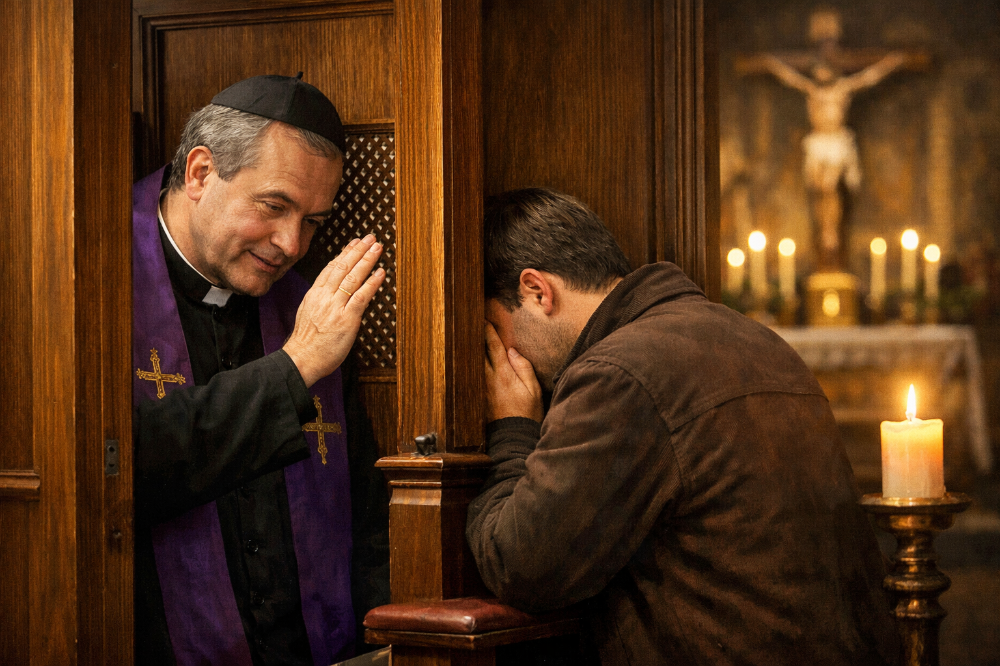

A Importância da Confissão Frequente: Saúde para a Alma
O Sacramento da Penitência, também conhecido como Confissão ou Reconciliação, é um dos presentes mais preciosos que Jesus deixou para Sua Igreja. Instituído na tarde da Ressurreição, quando Cristo disse aos Apóstolos: "Àqueles a quem perdoardes os pecados, ser-lhes-ão perdoados" (João 20, 23), este sacramento é o canal da misericórdia divina que restaura a vida da graça em nós. No entanto, muitos fiéis o veem apenas como uma obrigação anual, perdendo os tesouros de uma confissão frequente.
Por que se confessar se Deus conhece meu coração?
Deus, de fato, conhece nosso coração e nosso arrependimento. Mas Ele escolheu nos salvar como seres humanos, que precisam de sinais sensíveis. A Confissão é um encontro pessoal com Cristo na pessoa do sacerdote. Ao ouvirmos as palavras da absolvição, temos a certeza objetiva de que fomos perdoados. Além disso, o pecado não é apenas uma ofensa a Deus, mas uma ferida no corpo da Igreja, e a reconciliação com a comunidade se dá através do ministro ordenado.
"A confissão dos pecados veniais não é estritamente necessária, mas é vivamente recomendada pela Igreja. De fato, a confissão habitual dos nossos pecados veniais ajuda-nos a formar a nossa consciência, a lutar contra as nossas más inclinações, a deixarmo-nos curar por Cristo, a progredir na vida do Espírito." (Catecismo da Igreja Católica, 1458)
Os Benefícios da Confissão Frequente
Confessar-se regularmente (uma vez por mês ou a cada quinze dias) traz benefícios que vão muito além do perdão dos pecados:
- Autoconhecimento: O exame de consciência regular nos ajuda a identificar padrões de comportamento e raízes de vícios que muitas vezes passam despercebidos.
- Graça Sacramental: Além do perdão, recebemos uma força especial (graça) para vencer as tentações específicas que confessamos.
- Paz Interior: O peso da culpa é removido, trazendo uma serenidade que reflete em nossa saúde mental e em nossos relacionamentos.
- Humildade: Reconhecer nossas falhas diante de outro homem (o padre) quebra o nosso orgulho, que é a raiz de todos os pecados.
Como fazer uma boa Confissão?
Uma confissão santa exige preparação. Os santos recomendam cinco passos fundamentais:
- Exame de Consciência: Pedir ao Espírito Santo que nos mostre nossos pecados à luz dos Dez Mandamentos e dos deveres do nosso estado de vida.
- Arrependimento (Contrição): Ter dor no coração por ter ofendido a Deus, que é infinitamente bom.
- Propósito de Emenda: A vontade firme de não voltar a pecar e de evitar as ocasiões de pecado.
- Confissão dos Pecados: Dizer ao padre os pecados de forma clara, breve e completa (sem esconder nada).
- Satisfação (Penitência): Cumprir a oração ou obra de caridade que o padre prescrever para reparar o dano causado pelo pecado.
Conclusão: O Tribunal da Misericórdia
Diferente dos tribunais humanos, onde o réu vai para ser condenado, no "tribunal" da Confissão o réu vai para ser perdoado e abraçado. Não tenha medo ou vergonha. O padre está ali como pai e médico da alma. A confissão frequente é o segredo dos santos para manter a alma sempre limpa e pronta para o banquete da Eucaristia. Comece hoje mesmo essa prática e experimente a alegria de viver na plena amizade com Deus.
Que o Senhor lhe conceda um coração contrito e a alegria do Seu perdão.